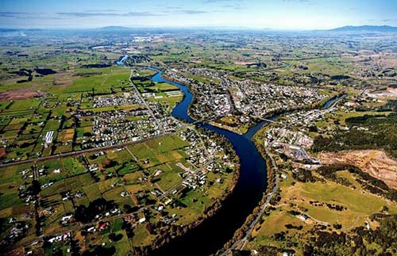
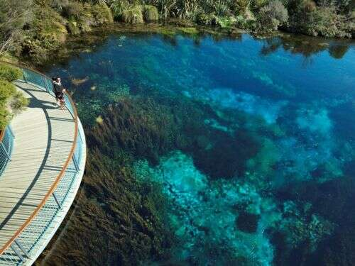

Northland
Northland is a region of endless cultural, historical, offering the visiters to have a unique glimpse of New Zealand's past and present.In NZ Northland is considered pf the birthplace, as the first European sttlers arrived here.
Auckland
Auckland is a very diversed region, and it's famously called as "City of sails". Overall Auckland blends with natural beauty, offering visitors a dynamic experience shaped by its diverse culture, stunning landscapes, and vibrant lifestyle.
Waikato
Waikato is known for their longest river in New Zealand call Waikato river, which flows through the region. It's also known for their glowworms caves, visitors explore the cave through ,with boat rides. Mainly it's considered as a compellingdestination for tourists.
Bay of Plenty

Bay of Plenty is a major for kiwifruit cultivation in New Zealand,with orchards covering extensive areas. Also know as the "Kiwifruit Capital of the World". Taurange is the largest city in the Bay of Plenty and is the fifth-largest city in New Zealand.
Gisborne

Hawke's Bay

Taranaki

Manawatu-Whanganui

Wellington

Tasman

Nelson
Marlborough

West Coast
Canterbury